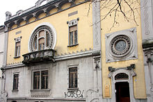

Simbolo della città è la cupola della Basilica di San Gaudenzio, alta 121 metri.

La cupola della Basilica di San Gaudenzio
Novara è un comune italiano di 105.574 abitanti, capoluogo dell'omonima provincia in Piemonte. È il
secondo comune della regione per popolazione dopo Torino e crocevia di importanti traffici commerciali tra
gli assi viari che congiungono Milano a Torino e Genova alla Svizzera.
Simbolo della città è la cupola della Basilica di San Gaudenzio, alta 121 metri.
La cupola della Basilica di San Gaudenzio
Novara dista 49 km da Milano (15 km dal confine con la regione Lombardia), 95 km da Torino, 23 km da
Vercelli. Dista inoltre circa 35 km dal Lago Maggiore e 40 km dal Lago d'Orta.

Risaie allagate alla periferia della città
L'antico nucleo cittadino di Novara, di forma pressoché pentagonale, è situato su un modesto rilievo
collinare (oggi Centro Storico, sede dell'omonima circoscrizione) e conserva ancora per gran parte,
nonostante le pesanti manomissioni in chiave moderna e le molte architetture neoclassiche, l'antico impianto
medievale con strade ciottolate e piccole piazze (piazza delle Erbe e piazza della Repubblica).

Resti delle mura romane
Il monumento più celebre di Novara è la Basilica di San Gaudenzio, costruita tra fine Cinquecento ed
inizio Seicento, e caratterizzata dall'imponente cupola neoclassica a pinnacolo progettata da Alessandro
Antonelli e aggiunta al corpo della chiesa nella seconda metà XIX secolo, da molti considerata la più alta al
mondo in mattoni.
Centro della vita religiosa cittadina è l'imponente Duomo, in stile neoclassico, progettato anch'esso da
Alessandro Antonelli e costruito a metà del XIX secolo sui resti di una preesistente cattedrale romanica
(sorge infatti nello stesso punto in cui si trovava anticamente il tempio di Giove), della quale appartengono
ancora la parte inferiore del campanile, il Chiostro della Canonica e l'Oratorio di San Siro.

Porticato della piazza del Duomo

Il Teatro Coccia
Casa Quaroni